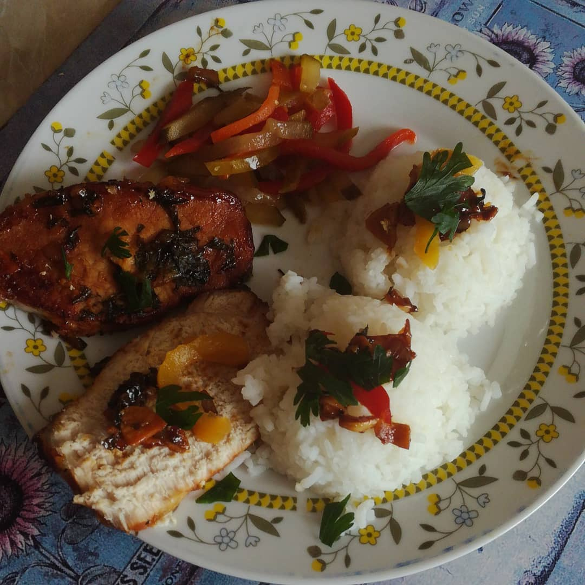

Paprikový šalát podľa @kroupovakarla — Normy Jedál
Dnešní oběd.
Pečená vepřová pečene na česneku s bylinkami ,rýže,paprikový salát.
#pátek #patecnipohoda #patek #oběd #obědy #obedy #obed #rychlovka #patecniobed #veprovapecene #vepřová #veprova #jistzdrave #jístzdravě #jistzdraveji #ryze #rýže #paprikovysalat #paprika #bylinky #cibule #cesnek #česnek